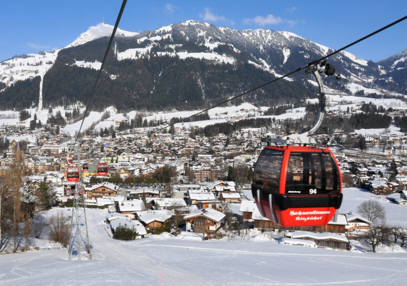
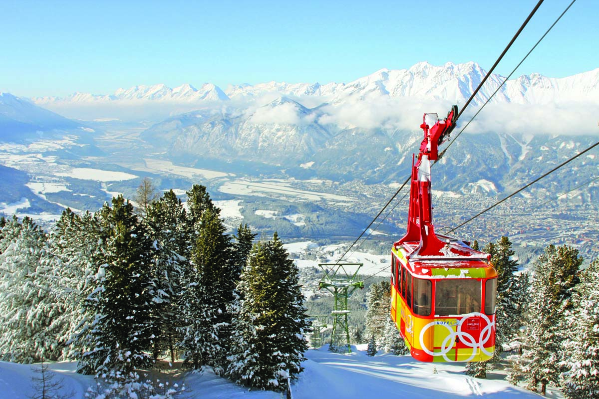
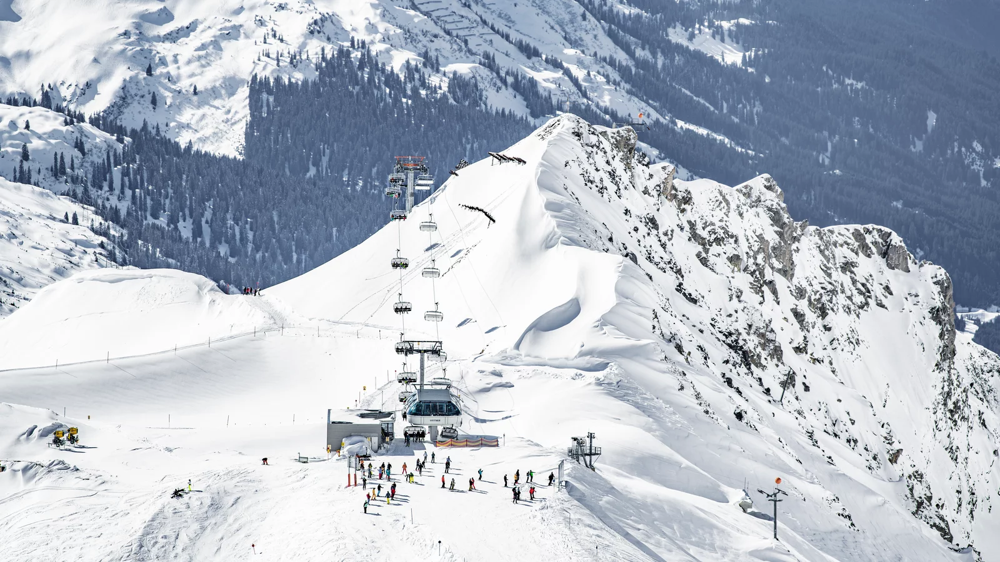
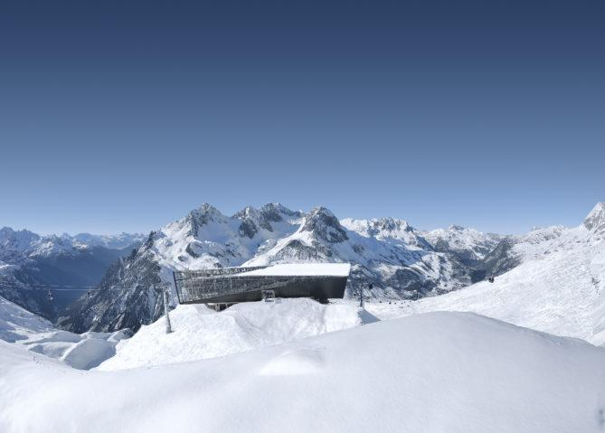

Vinter-aktiviteter
Alpint
Alpint er en av de mest kjente vinter aktivitetene du kan gjøre i Østerike, og er det beste landet til å reise på skiferie. Grunnnen til dette er det store utvalget av plasser du kan reise til. I Østerike er det over 400 ulike skitrekk og 3814 skihoteller, og blir derfor kaldt alpinparadiset.
Populære Skitrekk å Østerrike
|  |  |
| 1. Kitzbühel, Østerrike | 2. Innsbruck, Østerriske |
|---|---|
|  |  |
| 3. St. Anton am Alberg, Østerrike | 4. Lech-Zürs am Alberg, Østerrike |